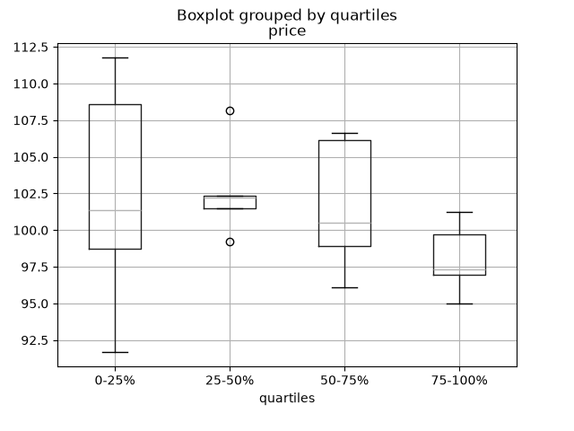

Cookbook#
This is a repository for short and sweet examples and links for useful pandas recipes.
Simplified, condensed, new-user friendly, in-line examples have been inserted where possible to augment the Stack-Overflow and GitHub links. Many of the links contain expanded information, above what the in-line examples offer.
pandas (pd) and NumPy (np) are the only two abbreviated imported modules. The rest are kept explicitly imported for newer users.
Idioms#
These are some neat pandas idioms
if-then/if-then-else on one column, and assignment to another one or more columns:
In [1]: df = pd.DataFrame(
...: {"AAA": [4, 5, 6, 7], "BBB": [10, 20, 30, 40], "CCC": [100, 50, -30, -50]}
...: )
...:
In [2]: df
Out[2]:
AAA BBB CCC
0 4 10 100
1 5 20 50
2 6 30 -30
3 7 40 -50
If-then…#
An if-then on one column
In [3]: df.loc[df.AAA >= 5, "BBB"] = -1
In [4]: df
Out[4]:
AAA BBB CCC
0 4 10 100
1 5 -1 50
2 6 -1 -30
3 7 -1 -50
An if-then with assignment to 2 columns:
In [5]: df.loc[df.AAA >= 5, ["BBB", "CCC"]] = 555
In [6]: df
Out[6]:
AAA BBB CCC
0 4 10 100
1 5 555 555
2 6 555 555
3 7 555 555
Add another line with different logic, to do the -else
In [7]: df.loc[df.AAA < 5, ["BBB", "CCC"]] = 2000
In [8]: df
Out[8]:
AAA BBB CCC
0 4 2000 2000
1 5 555 555
2 6 555 555
3 7 555 555
Or use pandas where after you’ve set up a mask
In [9]: df_mask = pd.DataFrame(
...: {"AAA": [True] * 4, "BBB": [False] * 4, "CCC": [True, False] * 2}
...: )
...:
In [10]: df.where(df_mask, -1000)
Out[10]:
AAA BBB CCC
0 4 -1000 2000
1 5 -1000 -1000
2 6 -1000 555
3 7 -1000 -1000
if-then-else using NumPy’s where()
In [11]: df = pd.DataFrame(
....: {"AAA": [4, 5, 6, 7], "BBB": [10, 20, 30, 40], "CCC": [100, 50, -30, -50]}
....: )
....:
In [12]: df
Out[12]:
AAA BBB CCC
0 4 10 100
1 5 20 50
2 6 30 -30
3 7 40 -50
In [13]: df["logic"] = np.where(df["AAA"] > 5, "high", "low")
In [14]: df
Out[14]:
AAA BBB CCC logic
0 4 10 100 low
1 5 20 50 low
2 6 30 -30 high
3 7 40 -50 high
Splitting#
Split a frame with a boolean criterion
In [15]: df = pd.DataFrame(
....: {"AAA": [4, 5, 6, 7], "BBB": [10, 20, 30, 40], "CCC": [100, 50, -30, -50]}
....: )
....:
In [16]: df
Out[16]:
AAA BBB CCC
0 4 10 100
1 5 20 50
2 6 30 -30
3 7 40 -50
In [17]: df[df.AAA <= 5]
Out[17]:
AAA BBB CCC
0 4 10 100
1 5 20 50
In [18]: df[df.AAA > 5]
Out[18]:
AAA BBB CCC
2 6 30 -30
3 7 40 -50
Building criteria#
Select with multi-column criteria
In [19]: df = pd.DataFrame(
....: {"AAA": [4, 5, 6, 7], "BBB": [10, 20, 30, 40], "CCC": [100, 50, -30, -50]}
....: )
....:
In [20]: df
Out[20]:
AAA BBB CCC
0 4 10 100
1 5 20 50
2 6 30 -30
3 7 40 -50
…and (without assignment returns a Series)
In [21]: df.loc[(df["BBB"] < 25) & (df["CCC"] >= -40), "AAA"]
Out[21]:
0 4
1 5
Name: AAA, dtype: int64
…or (without assignment returns a Series)
In [22]: df.loc[(df["BBB"] > 25) | (df["CCC"] >= -40), "AAA"]
Out[22]:
0 4
1 5
2 6
3 7
Name: AAA, dtype: int64
…or (with assignment modifies the DataFrame.)
In [23]: df.loc[(df["BBB"] > 25) | (df["CCC"] >= 75), "AAA"] = 999
In [24]: df
Out[24]:
AAA BBB CCC
0 999 10 100
1 5 20 50
2 999 30 -30
3 999 40 -50
Select rows with data closest to certain value using argsort
In [25]: df = pd.DataFrame(
....: {"AAA": [4, 5, 6, 7], "BBB": [10, 20, 30, 40], "CCC": [100, 50, -30, -50]}
....: )
....:
In [26]: df
Out[26]:
AAA BBB CCC
0 4 10 100
1 5 20 50
2 6 30 -30
3 7 40 -50
In [27]: aValue = 43.0
In [28]: df.loc[(df.CCC - aValue).abs().argsort()]
Out[28]:
AAA BBB CCC
1 5 20 50
0 4 10 100
2 6 30 -30
3 7 40 -50
Dynamically reduce a list of criteria using a binary operators
In [29]: df = pd.DataFrame(
....: {"AAA": [4, 5, 6, 7], "BBB": [10, 20, 30, 40], "CCC": [100, 50, -30, -50]}
....: )
....:
In [30]: df
Out[30]:
AAA BBB CCC
0 4 10 100
1 5 20 50
2 6 30 -30
3 7 40 -50
In [31]: Crit1 = df.AAA <= 5.5
In [32]: Crit2 = df.BBB == 10.0
In [33]: Crit3 = df.CCC > -40.0
One could hard code:
In [34]: AllCrit = Crit1 & Crit2 & Crit3
…Or it can be done with a list of dynamically built criteria
In [35]: import functools
In [36]: CritList = [Crit1, Crit2, Crit3]
In [37]: AllCrit = functools.reduce(lambda x, y: x & y, CritList)
In [38]: df[AllCrit]
Out[38]:
AAA BBB CCC
0 4 10 100
Repeating rows or columns#
Unlike Series.repeat(), DataFrame has no repeat method. The same result can be
achieved by repeating the row (or column) labels and passing them to DataFrame.reindex().
This requires the labels on the repeated axis to be unique GH 42943
In [39]: df = pd.DataFrame({"AAA": [1, 2], "BBB": [3, 4]})
In [40]: df.reindex(df.index.repeat(2))
Out[40]:
AAA BBB
0 1 3
0 1 3
1 2 4
1 2 4
In [41]: df.reindex(df.index.repeat(2)).reset_index(drop=True)
Out[41]:
AAA BBB
0 1 3
1 1 3
2 2 4
3 2 4
In [42]: df.reindex(columns=df.columns.repeat([1, 2]))
Out[42]:
AAA BBB BBB
0 1 3 3
1 2 4 4
Repeating positions with DataFrame.iloc() instead works whether or not the labels are
unique:
In [43]: df.iloc[np.repeat(np.arange(len(df)), 2)]
Out[43]:
AAA BBB
0 1 3
0 1 3
1 2 4
1 2 4
Expanding ranges into rows#
Given columns of start and stop values, expand each row into one row per value in
range(start, stop). Applying range row-wise and calling Series.explode() is
simple but slow for large inputs; a vectorized construction with numpy.repeat() is
much faster, especially when there are many rows to expand GH 39630
In [44]: df = pd.DataFrame({"start": [10, 27, 30], "stop": [15, 31, 31]})
In [45]: start = df["start"].to_numpy()
In [46]: stop = df["stop"].to_numpy()
In [47]: counts = stop - start
In [48]: offsets = np.arange(counts.sum()) - np.repeat(counts.cumsum() - counts, counts)
In [49]: pd.Series(np.repeat(start, counts) + offsets, index=df.index.repeat(counts))
Out[49]:
0 10
0 11
0 12
0 13
0 14
1 27
1 28
1 29
1 30
2 30
dtype: int64
Selection#
DataFrames#
The indexing docs.
Using both row labels and value conditionals
In [50]: df = pd.DataFrame(
....: {"AAA": [4, 5, 6, 7], "BBB": [10, 20, 30, 40], "CCC": [100, 50, -30, -50]}
....: )
....:
In [51]: df
Out[51]:
AAA BBB CCC
0 4 10 100
1 5 20 50
2 6 30 -30
3 7 40 -50
In [52]: df[(df.AAA <= 6) & (df.index.isin([0, 2, 4]))]
Out[52]:
AAA BBB CCC
0 4 10 100
2 6 30 -30
Use loc for label-oriented slicing and iloc positional slicing GH 2904
In [53]: df = pd.DataFrame(
....: {"AAA": [4, 5, 6, 7], "BBB": [10, 20, 30, 40], "CCC": [100, 50, -30, -50]},
....: index=["foo", "bar", "boo", "kar"],
....: )
....:
There are 2 explicit slicing methods, with a third general case
Positional-oriented (Python slicing style : exclusive of end)
Label-oriented (Non-Python slicing style : inclusive of end)
General (Either slicing style : depends on if the slice contains labels or positions)
In [54]: df.loc["bar":"kar"] # Label
Out[54]:
AAA BBB CCC
bar 5 20 50
boo 6 30 -30
kar 7 40 -50
# Generic
In [55]: df[0:3]
Out[55]:
AAA BBB CCC
foo 4 10 100
bar 5 20 50
boo 6 30 -30
In [56]: df["bar":"kar"]
Out[56]:
AAA BBB CCC
bar 5 20 50
boo 6 30 -30
kar 7 40 -50
Ambiguity arises when an index consists of integers with a non-zero start or non-unit increment.
In [57]: data = {"AAA": [4, 5, 6, 7], "BBB": [10, 20, 30, 40], "CCC": [100, 50, -30, -50]}
In [58]: df2 = pd.DataFrame(data=data, index=[1, 2, 3, 4]) # Note index starts at 1.
In [59]: df2.iloc[1:3] # Position-oriented
Out[59]:
AAA BBB CCC
2 5 20 50
3 6 30 -30
In [60]: df2.loc[1:3] # Label-oriented
Out[60]:
AAA BBB CCC
1 4 10 100
2 5 20 50
3 6 30 -30
Using inverse operator (~) to take the complement of a mask
In [61]: df = pd.DataFrame(
....: {"AAA": [4, 5, 6, 7], "BBB": [10, 20, 30, 40], "CCC": [100, 50, -30, -50]}
....: )
....:
In [62]: df
Out[62]:
AAA BBB CCC
0 4 10 100
1 5 20 50
2 6 30 -30
3 7 40 -50
In [63]: df[~((df.AAA <= 6) & (df.index.isin([0, 2, 4])))]
Out[63]:
AAA BBB CCC
1 5 20 50
3 7 40 -50
How to randomly extract n contiguous rows in a pandas DataFrame?
In [64]: df = pd.DataFrame({
....: 'A': range(10),
....: 'B': range(10),
....: 'C': range(10)
....: })
....:
In [65]: window_size = 5
In [66]: start_idx = np.random.randint(0, len(df) - window_size + 1)
In [67]: df.iloc[start_idx:start_idx+window_size]
Out[67]:
A B C
1 1 1 1
2 2 2 2
3 3 3 3
4 4 4 4
5 5 5 5
New columns#
Efficiently and dynamically creating new columns using DataFrame.map (previously named applymap)
In [68]: df = pd.DataFrame({"AAA": [1, 2, 1, 3], "BBB": [1, 1, 2, 2], "CCC": [2, 1, 3, 1]})
In [69]: df
Out[69]:
AAA BBB CCC
0 1 1 2
1 2 1 1
2 1 2 3
3 3 2 1
In [70]: source_cols = df.columns # Or some subset would work too
In [71]: new_cols = [str(x) + "_cat" for x in source_cols]
In [72]: categories = {1: "Alpha", 2: "Beta", 3: "Charlie"}
In [73]: df[new_cols] = df[source_cols].map(categories.get)
In [74]: df
Out[74]:
AAA BBB CCC AAA_cat BBB_cat CCC_cat
0 1 1 2 Alpha Alpha Beta
1 2 1 1 Beta Alpha Alpha
2 1 2 3 Alpha Beta Charlie
3 3 2 1 Charlie Beta Alpha
Keep other columns when using min() with groupby
In [75]: df = pd.DataFrame(
....: {"AAA": [1, 1, 1, 2, 2, 2, 3, 3], "BBB": [2, 1, 3, 4, 5, 1, 2, 3]}
....: )
....:
In [76]: df
Out[76]:
AAA BBB
0 1 2
1 1 1
2 1 3
3 2 4
4 2 5
5 2 1
6 3 2
7 3 3
Method 1 : idxmin() to get the index of the minimums
In [77]: df.loc[df.groupby("AAA")["BBB"].idxmin()]
Out[77]:
AAA BBB
1 1 1
5 2 1
6 3 2
Method 2 : sort then take first of each
In [78]: df.sort_values(by="BBB").groupby("AAA", as_index=False).first()
Out[78]:
AAA BBB
0 1 1
1 2 1
2 3 2
Notice the same results, with the exception of the index.
Multiindexing#
The multindexing docs.
Creating a MultiIndex from a labeled frame
In [79]: df = pd.DataFrame(
....: {
....: "row": [0, 1, 2],
....: "One_X": [1.1, 1.1, 1.1],
....: "One_Y": [1.2, 1.2, 1.2],
....: "Two_X": [1.11, 1.11, 1.11],
....: "Two_Y": [1.22, 1.22, 1.22],
....: }
....: )
....:
In [80]: df
Out[80]:
row One_X One_Y Two_X Two_Y
0 0 1.1 1.2 1.11 1.22
1 1 1.1 1.2 1.11 1.22
2 2 1.1 1.2 1.11 1.22
# As Labelled Index
In [81]: df = df.set_index("row")
In [82]: df
Out[82]:
One_X One_Y Two_X Two_Y
row
0 1.1 1.2 1.11 1.22
1 1.1 1.2 1.11 1.22
2 1.1 1.2 1.11 1.22
# With Hierarchical Columns
In [83]: df.columns = pd.MultiIndex.from_tuples([tuple(c.split("_")) for c in df.columns])
In [84]: df
Out[84]:
One Two
X Y X Y
row
0 1.1 1.2 1.11 1.22
1 1.1 1.2 1.11 1.22
2 1.1 1.2 1.11 1.22
# Now stack & Reset
In [85]: df = df.stack(0).reset_index(1)
In [86]: df
Out[86]:
level_1 X Y
row
0 One 1.10 1.20
0 Two 1.11 1.22
1 One 1.10 1.20
1 Two 1.11 1.22
2 One 1.10 1.20
2 Two 1.11 1.22
# And fix the labels (Notice the label 'level_1' got added automatically)
In [87]: df.columns = ["Sample", "All_X", "All_Y"]
In [88]: df
Out[88]:
Sample All_X All_Y
row
0 One 1.10 1.20
0 Two 1.11 1.22
1 One 1.10 1.20
1 Two 1.11 1.22
2 One 1.10 1.20
2 Two 1.11 1.22
Arithmetic#
Performing arithmetic with a MultiIndex that needs broadcasting
In [89]: cols = pd.MultiIndex.from_tuples(
....: [(x, y) for x in ["A", "B", "C"] for y in ["O", "I"]]
....: )
....:
In [90]: df = pd.DataFrame(np.random.randn(2, 6), index=["n", "m"], columns=cols)
In [91]: df
Out[91]:
A B C
O I O I O I
n 0.952516 0.035680 0.974184 0.719101 0.184765 0.619326
m -1.138680 -0.641576 0.443212 -0.110240 -0.166778 0.501113
In [92]: df = df.div(df["C"], level=1)
In [93]: df
Out[93]:
A B C
O I O I O I
n 5.155278 0.057611 5.272551 1.161103 1.0 1.0
m 6.827507 -1.280302 -2.657489 -0.219990 1.0 1.0
Slicing#
In [94]: coords = [("AA", "one"), ("AA", "six"), ("BB", "one"), ("BB", "two"), ("BB", "six")]
In [95]: index = pd.MultiIndex.from_tuples(coords)
In [96]: df = pd.DataFrame([11, 22, 33, 44, 55], index, ["MyData"])
In [97]: df
Out[97]:
MyData
AA one 11
six 22
BB one 33
two 44
six 55
To take the cross section of the 1st level and 1st axis the index:
# Note : level and axis are optional, and default to zero
In [98]: df.xs("BB", level=0, axis=0)
Out[98]:
MyData
one 33
two 44
six 55
…and now the 2nd level of the 1st axis.
In [99]: df.xs("six", level=1, axis=0)
Out[99]:
MyData
AA 22
BB 55
Slicing a MultiIndex with xs, method #2
In [100]: import itertools
In [101]: index = list(itertools.product(["Ada", "Quinn", "Violet"], ["Comp", "Math", "Sci"]))
In [102]: headr = list(itertools.product(["Exams", "Labs"], ["I", "II"]))
In [103]: indx = pd.MultiIndex.from_tuples(index, names=["Student", "Course"])
In [104]: cols = pd.MultiIndex.from_tuples(headr) # Notice these are un-named
In [105]: data = [[70 + x + y + (x * y) % 3 for x in range(4)] for y in range(9)]
In [106]: df = pd.DataFrame(data, indx, cols)
In [107]: df
Out[107]:
Exams Labs
I II I II
Student Course
Ada Comp 70 71 72 73
Math 71 73 75 74
Sci 72 75 75 75
Quinn Comp 73 74 75 76
Math 74 76 78 77
Sci 75 78 78 78
Violet Comp 76 77 78 79
Math 77 79 81 80
Sci 78 81 81 81
In [108]: All = slice(None)
In [109]: df.loc["Violet"]
Out[109]:
Exams Labs
I II I II
Course
Comp 76 77 78 79
Math 77 79 81 80
Sci 78 81 81 81
In [110]: df.loc[(All, "Math"), All]
Out[110]:
Exams Labs
I II I II
Student Course
Ada Math 71 73 75 74
Quinn Math 74 76 78 77
Violet Math 77 79 81 80
In [111]: df.loc[(slice("Ada", "Quinn"), "Math"), All]
Out[111]:
Exams Labs
I II I II
Student Course
Ada Math 71 73 75 74
Quinn Math 74 76 78 77
In [112]: df.loc[(All, "Math"), ("Exams")]
Out[112]:
I II
Student Course
Ada Math 71 73
Quinn Math 74 76
Violet Math 77 79
In [113]: df.loc[(All, "Math"), (All, "II")]
Out[113]:
Exams Labs
II II
Student Course
Ada Math 73 74
Quinn Math 76 77
Violet Math 79 80
Sorting#
Sort by specific column or an ordered list of columns, with a MultiIndex
In [114]: df.sort_values(by=("Labs", "II"), ascending=False)
Out[114]:
Exams Labs
I II I II
Student Course
Violet Sci 78 81 81 81
Math 77 79 81 80
Comp 76 77 78 79
Quinn Sci 75 78 78 78
Math 74 76 78 77
Comp 73 74 75 76
Ada Sci 72 75 75 75
Math 71 73 75 74
Comp 70 71 72 73
Partial selection, the need for sortedness GH 2995
Levels#
Prepending a level to a multiindex
In [115]: df = pd.DataFrame(
.....: {"A": ["a1", "a1", "a2", "a3"], "B": ["b1", "b2", "b3", "b4"], "Vals": np.random.randn(4)}
.....: ).groupby(["A", "B"]).sum()
.....:
In [116]: df
Out[116]:
Vals
A B
a1 b1 -0.355322
b2 -0.337890
a2 b3 0.580967
a3 b4 0.983801
Prepend a constant label to the existing row MultiIndex using pd.concat with the keys argument:
In [117]: df = pd.concat([df], keys=["Foo"], names=["FirstLevel"])
In [118]: df
Out[118]:
Vals
FirstLevel A B
Foo a1 b1 -0.355322
b2 -0.337890
a2 b3 0.580967
a3 b4 0.983801
In [119]: df = pd.DataFrame(
.....: {
.....: "USAF": ["702730"] * 4,
.....: "WBAN": [26451] * 4,
.....: "day": [1, 2, 3, 4],
.....: "s_PC": [1, 0, 1, 3],
.....: "s_CL": [0, 0, 10, 0],
.....: "tempf": [30.92, 32.00, 23.00, 10.04],
.....: }
.....: )
.....:
In [120]: df = df.groupby(["USAF", "WBAN", "day"]).agg(
.....: {"s_PC": "sum", "s_CL": "sum", "tempf": ["max", "min"]}
.....: ).reset_index()
.....:
In [121]: df
Out[121]:
USAF WBAN day s_PC s_CL tempf
sum sum max min
0 702730 26451 1 1 0 30.92 30.92
1 702730 26451 2 0 0 32.00 32.00
2 702730 26451 3 1 10 23.00 23.00
3 702730 26451 4 3 0 10.04 10.04
Use a generator expression to drop the empty-string second levels before joining, so
("USAF", "") becomes "USAF" rather than "USAF_". Columns with a real
aggregation label are joined normally, so ("tempf", "max") becomes "tempf_max"
and ("s_PC", "sum") becomes "s_PC_sum":
In [122]: df.columns = ["_".join(c for c in col if c) for col in df.columns]
In [123]: df
Out[123]:
USAF WBAN day s_PC_sum s_CL_sum tempf_max tempf_min
0 702730 26451 1 1 0 30.92 30.92
1 702730 26451 2 0 0 32.00 32.00
2 702730 26451 3 1 10 23.00 23.00
3 702730 26451 4 3 0 10.04 10.04
Missing data#
The missing data docs.
Fill forward a reversed timeseries
In [124]: df = pd.DataFrame(
.....: np.random.randn(6, 1),
.....: index=pd.date_range("2013-08-01", periods=6, freq="B"),
.....: columns=list("A"),
.....: )
.....:
In [125]: df.loc[df.index[3], "A"] = np.nan
In [126]: df
Out[126]:
A
2013-08-01 0.057802
2013-08-02 0.761948
2013-08-05 -0.712964
2013-08-06 NaN
2013-08-07 -0.974602
2013-08-08 1.047704
In [127]: df.bfill()
Out[127]:
A
2013-08-01 0.057802
2013-08-02 0.761948
2013-08-05 -0.712964
2013-08-06 -0.974602
2013-08-07 -0.974602
2013-08-08 1.047704
Replace#
Grouping#
The grouping docs.
Unlike agg, apply’s callable is passed a sub-DataFrame which gives you access to all the columns
In [128]: df = pd.DataFrame(
.....: {
.....: "animal": "cat dog cat fish dog cat cat".split(),
.....: "size": list("SSMMMLL"),
.....: "weight": [8, 10, 11, 1, 20, 12, 12],
.....: "adult": [False] * 5 + [True] * 2,
.....: }
.....: )
.....:
In [129]: df
Out[129]:
animal size weight adult
0 cat S 8 False
1 dog S 10 False
2 cat M 11 False
3 fish M 1 False
4 dog M 20 False
5 cat L 12 True
6 cat L 12 True
# List the size of the animals with the highest weight.
In [130]: df.groupby("animal").apply(lambda subf: subf["size"][subf["weight"].idxmax()])
Out[130]:
animal
cat L
dog M
fish M
dtype: str
In [131]: gb = df.groupby("animal")
In [132]: gb.get_group("cat")
Out[132]:
animal size weight adult
0 cat S 8 False
2 cat M 11 False
5 cat L 12 True
6 cat L 12 True
Apply to different items in a group
In [133]: def GrowUp(x):
.....: avg_weight = sum(x[x["size"] == "S"].weight * 1.5)
.....: avg_weight += sum(x[x["size"] == "M"].weight * 1.25)
.....: avg_weight += sum(x[x["size"] == "L"].weight)
.....: avg_weight /= len(x)
.....: return pd.Series(["L", avg_weight, True], index=["size", "weight", "adult"])
.....:
In [134]: expected_df = gb.apply(GrowUp)
In [135]: expected_df
Out[135]:
size weight adult
animal
cat L 12.4375 True
dog L 20.0000 True
fish L 1.2500 True
In [136]: S = pd.Series([i / 100.0 for i in range(1, 11)])
In [137]: def cum_ret(x, y):
.....: return x * (1 + y)
.....:
In [138]: def red(x):
.....: return functools.reduce(cum_ret, x, 1.0)
.....:
In [139]: S.expanding().apply(red, raw=True)
Out[139]:
0 1.010000
1 1.030200
2 1.061106
3 1.103550
4 1.158728
5 1.228251
6 1.314229
7 1.419367
8 1.547110
9 1.701821
dtype: float64
Replacing some values with mean of the rest of a group
In [140]: df = pd.DataFrame({"A": [1, 1, 2, 2], "B": [1, -1, 1, 2]})
In [141]: gb = df.groupby("A")
In [142]: def replace(g):
.....: mask = g < 0
.....: return g.where(~mask, g[~mask].mean())
.....:
In [143]: gb.transform(replace)
Out[143]:
B
0 1
1 1
2 1
3 2
Sort groups by aggregated data
In [144]: df = pd.DataFrame(
.....: {
.....: "code": ["foo", "bar", "baz"] * 2,
.....: "data": [0.16, -0.21, 0.33, 0.45, -0.59, 0.62],
.....: "flag": [False, True] * 3,
.....: }
.....: )
.....:
In [145]: code_groups = df.groupby("code")
In [146]: agg_n_sort_order = code_groups[["data"]].transform("sum").sort_values(by="data")
In [147]: sorted_df = df.loc[agg_n_sort_order.index]
In [148]: sorted_df
Out[148]:
code data flag
1 bar -0.21 True
4 bar -0.59 False
3 foo 0.45 True
0 foo 0.16 False
2 baz 0.33 False
5 baz 0.62 True
Create multiple aggregated columns
In [149]: rng = pd.date_range(start="2014-10-07", periods=10, freq="2min")
In [150]: ts = pd.Series(data=list(range(10)), index=rng)
In [151]: def MyCust(x):
.....: if len(x) > 2:
.....: return x.iloc[1] * 1.234
.....: return pd.NaT
.....:
In [152]: mhc = {"Mean": "mean", "Max": "max", "Custom": MyCust}
In [153]: ts.resample("5min").apply(mhc)
Out[153]:
Mean Max Custom
2014-10-07 00:00:00 1.0 2 1.234
2014-10-07 00:05:00 3.5 4 NaT
2014-10-07 00:10:00 6.0 7 7.404
2014-10-07 00:15:00 8.5 9 NaT
In [154]: ts
Out[154]:
2014-10-07 00:00:00 0
2014-10-07 00:02:00 1
2014-10-07 00:04:00 2
2014-10-07 00:06:00 3
2014-10-07 00:08:00 4
2014-10-07 00:10:00 5
2014-10-07 00:12:00 6
2014-10-07 00:14:00 7
2014-10-07 00:16:00 8
2014-10-07 00:18:00 9
Freq: 2min, dtype: int64
Create a value counts column and reassign back to the DataFrame
In [155]: df = pd.DataFrame(
.....: {"Color": "Red Red Red Blue".split(), "Value": [100, 150, 50, 50]}
.....: )
.....:
In [156]: df
Out[156]:
Color Value
0 Red 100
1 Red 150
2 Red 50
3 Blue 50
In [157]: df["Counts"] = df.groupby(["Color"]).transform(len)
In [158]: df
Out[158]:
Color Value Counts
0 Red 100 3
1 Red 150 3
2 Red 50 3
3 Blue 50 1
Shift groups of the values in a column based on the index
In [159]: df = pd.DataFrame(
.....: {"line_race": [10, 10, 8, 10, 10, 8], "beyer": [99, 102, 103, 103, 88, 100]},
.....: index=[
.....: "Last Gunfighter",
.....: "Last Gunfighter",
.....: "Last Gunfighter",
.....: "Paynter",
.....: "Paynter",
.....: "Paynter",
.....: ],
.....: )
.....:
In [160]: df
Out[160]:
line_race beyer
Last Gunfighter 10 99
Last Gunfighter 10 102
Last Gunfighter 8 103
Paynter 10 103
Paynter 10 88
Paynter 8 100
In [161]: df["beyer_shifted"] = df.groupby(level=0)["beyer"].shift(1)
In [162]: df
Out[162]:
line_race beyer beyer_shifted
Last Gunfighter 10 99 NaN
Last Gunfighter 10 102 99.0
Last Gunfighter 8 103 102.0
Paynter 10 103 NaN
Paynter 10 88 103.0
Paynter 8 100 88.0
Select row with maximum value from each group
In [163]: df = pd.DataFrame(
.....: {
.....: "host": ["other", "other", "that", "this", "this"],
.....: "service": ["mail", "web", "mail", "mail", "web"],
.....: "no": [1, 2, 1, 2, 1],
.....: }
.....: ).set_index(["host", "service"])
.....:
In [164]: mask = df.groupby(level=0).agg("idxmax")
In [165]: df_count = df.loc[mask["no"]].reset_index()
In [166]: df_count
Out[166]:
host service no
0 other web 2
1 that mail 1
2 this mail 2
Grouping like Python’s itertools.groupby
In [167]: df = pd.DataFrame([0, 1, 0, 1, 1, 1, 0, 1, 1], columns=["A"])
In [168]: df["A"].groupby((df["A"] != df["A"].shift()).cumsum()).groups
Out[168]: {1: [0], 2: [1], 3: [2], 4: [3, 4, 5], 5: [6], 6: [7, 8]}
In [169]: df["A"].groupby((df["A"] != df["A"].shift()).cumsum()).cumsum()
Out[169]:
0 0
1 1
2 0
3 1
4 2
5 3
6 0
7 1
8 2
Name: A, dtype: int64
Expanding data#
Rolling Computation window based on values instead of counts
Splitting#
Create a list of dataframes, split using a delineation based on logic included in rows.
In [170]: df = pd.DataFrame(
.....: data={
.....: "Case": ["A", "A", "A", "B", "A", "A", "B", "A", "A"],
.....: "Data": np.random.randn(9),
.....: }
.....: )
.....:
In [171]: dfs = list(
.....: zip(
.....: *df.groupby(
.....: (1 * (df["Case"] == "B"))
.....: .cumsum()
.....: .rolling(window=3, min_periods=1)
.....: .median()
.....: )
.....: )
.....: )[-1]
.....:
In [172]: dfs[0]
Out[172]:
Case Data
0 A -0.717852
1 A -1.053898
2 A -0.019369
3 B 0.758887
In [173]: dfs[1]
Out[173]:
Case Data
4 A 2.340598
5 A 0.219039
6 B -1.235583
In [174]: dfs[2]
Out[174]:
Case Data
7 A 0.031785
8 A 0.701683
Pivot#
The Pivot docs.
In [175]: df = pd.DataFrame(
.....: data={
.....: "Province": ["ON", "QC", "BC", "AL", "AL", "MN", "ON"],
.....: "City": [
.....: "Toronto",
.....: "Montreal",
.....: "Vancouver",
.....: "Calgary",
.....: "Edmonton",
.....: "Winnipeg",
.....: "Windsor",
.....: ],
.....: "Sales": [13, 6, 16, 8, 4, 3, 1],
.....: }
.....: )
.....:
In [176]: table = pd.pivot_table(
.....: df,
.....: values=["Sales"],
.....: index=["Province"],
.....: columns=["City"],
.....: aggfunc="sum",
.....: margins=True,
.....: )
.....:
In [177]: table.stack("City")
Out[177]:
Sales
Province City
AL Calgary 8.0
Edmonton 4.0
Montreal NaN
Toronto NaN
Vancouver NaN
... ...
All Toronto 13.0
Vancouver 16.0
Windsor 1.0
Winnipeg 3.0
All 51.0
[48 rows x 1 columns]
Frequency table like plyr in R
In [178]: grades = [48, 99, 75, 80, 42, 80, 72, 68, 36, 78]
In [179]: df = pd.DataFrame(
.....: {
.....: "ID": ["x%d" % r for r in range(10)],
.....: "Gender": ["F", "M", "F", "M", "F", "M", "F", "M", "M", "M"],
.....: "ExamYear": [
.....: "2007",
.....: "2007",
.....: "2007",
.....: "2008",
.....: "2008",
.....: "2008",
.....: "2008",
.....: "2009",
.....: "2009",
.....: "2009",
.....: ],
.....: "Class": [
.....: "algebra",
.....: "stats",
.....: "bio",
.....: "algebra",
.....: "algebra",
.....: "stats",
.....: "stats",
.....: "algebra",
.....: "bio",
.....: "bio",
.....: ],
.....: "Participated": [
.....: "yes",
.....: "yes",
.....: "yes",
.....: "yes",
.....: "no",
.....: "yes",
.....: "yes",
.....: "yes",
.....: "yes",
.....: "yes",
.....: ],
.....: "Passed": ["yes" if x > 50 else "no" for x in grades],
.....: "Employed": [
.....: True,
.....: True,
.....: True,
.....: False,
.....: False,
.....: False,
.....: False,
.....: True,
.....: True,
.....: False,
.....: ],
.....: "Grade": grades,
.....: }
.....: )
.....:
In [180]: df.groupby("ExamYear").agg(
.....: {
.....: "Participated": lambda x: x.value_counts()["yes"],
.....: "Passed": lambda x: sum(x == "yes"),
.....: "Employed": lambda x: sum(x),
.....: "Grade": lambda x: sum(x) / len(x),
.....: }
.....: )
.....:
Out[180]:
Participated Passed Employed Grade
ExamYear
2007 3 2 3 74.000000
2008 3 3 0 68.500000
2009 3 2 2 60.666667
Plot pandas DataFrame with year over year data
To create year and month cross tabulation:
In [181]: df = pd.DataFrame(
.....: {"value": np.random.randn(36)},
.....: index=pd.date_range("2011-01-01", freq="ME", periods=36),
.....: )
.....:
In [182]: pd.pivot_table(
.....: df, index=df.index.month, columns=df.index.year, values="value", aggfunc="sum"
.....: )
.....:
Out[182]:
2011 2012 2013
1 -1.557016 0.109001 1.171652
2 -0.636986 -0.533294 1.387952
3 -1.238610 0.243981 0.009025
4 0.179286 -1.037831 0.613766
5 -1.002278 -1.150016 -0.031653
6 0.654052 -0.871461 0.543156
7 1.150663 -0.687693 -0.983195
8 -1.269741 1.921056 -1.247823
9 1.053999 -0.121113 1.710348
10 0.651981 -0.258742 -0.466489
11 0.280668 -0.706329 -0.590065
12 0.642481 0.402547 -0.245043
Apply#
Rolling apply to organize - Turning embedded lists into a MultiIndex frame
In [183]: df = pd.DataFrame(
.....: data={
.....: "A": [[2, 4, 8, 16], [100, 200], [10, 20, 30]],
.....: "B": [["a", "b", "c"], ["jj", "kk"], ["ccc"]],
.....: },
.....: index=["I", "II", "III"],
.....: )
.....:
In [184]: def SeriesFromSubList(aList):
.....: return pd.Series(aList)
.....:
In [185]: df_orgz = pd.concat(
.....: {ind: row.apply(SeriesFromSubList) for ind, row in df.iterrows()}
.....: )
.....:
In [186]: df_orgz
Out[186]:
0 1 2 3
I A 2 4 8 16.0
B a b c NaN
II A 100 200 NaN NaN
B jj kk NaN NaN
III A 10 20.0 30.0 NaN
B ccc NaN NaN NaN
Rolling apply with a DataFrame returning a Series
Rolling Apply to multiple columns where function calculates a Series before a Scalar from the Series is returned
In [187]: df = pd.DataFrame(
.....: data=np.random.randn(2000, 2) / 10000,
.....: index=pd.date_range("2001-01-01", periods=2000),
.....: columns=["A", "B"],
.....: )
.....:
In [188]: df
Out[188]:
A B
2001-01-01 -0.000055 0.000094
2001-01-02 -0.000019 -0.000077
2001-01-03 0.000018 0.000007
2001-01-04 -0.000015 -0.000055
2001-01-05 0.000153 -0.000160
... ... ...
2006-06-19 0.000061 -0.000188
2006-06-20 -0.000005 -0.000152
2006-06-21 0.000083 -0.000141
2006-06-22 0.000222 0.000099
2006-06-23 -0.000001 -0.000118
[2000 rows x 2 columns]
In [189]: def gm(df, const):
.....: v = ((((df["A"] + df["B"]) + 1).cumprod()) - 1) * const
.....: return v.iloc[-1]
.....:
In [190]: s = pd.Series(
.....: {
.....: df.index[i]: gm(df.iloc[i: min(i + 51, len(df) - 1)], 5)
.....: for i in range(len(df) - 50)
.....: }
.....: )
.....:
In [191]: s
Out[191]:
2001-01-01 0.002351
2001-01-02 0.000715
2001-01-03 0.000781
2001-01-04 0.000600
2001-01-05 0.000553
...
2006-04-30 0.002038
2006-05-01 -0.000297
2006-05-02 -0.001285
2006-05-03 -0.000136
2006-05-04 0.000555
Length: 1950, dtype: float64
Rolling apply with a DataFrame returning a Scalar
Rolling Apply to multiple columns where function returns a Scalar (Volume Weighted Average Price)
In [192]: rng = pd.date_range(start="2014-01-01", periods=100)
In [193]: df = pd.DataFrame(
.....: {
.....: "Open": np.random.randn(len(rng)),
.....: "Close": np.random.randn(len(rng)),
.....: "Volume": np.random.randint(100, 2000, len(rng)),
.....: },
.....: index=rng,
.....: )
.....:
In [194]: df
Out[194]:
Open Close Volume
2014-01-01 0.033486 -0.696814 1584
2014-01-02 -0.814911 0.757498 1646
2014-01-03 0.914505 -0.050488 1834
2014-01-04 1.341414 0.334399 714
2014-01-05 -0.147454 0.267882 1209
... ... ... ...
2014-04-06 -1.003720 1.057274 820
2014-04-07 -1.267996 -0.758783 1720
2014-04-08 0.014528 0.120241 484
2014-04-09 0.705241 -0.277638 1675
2014-04-10 -0.281064 0.371639 835
[100 rows x 3 columns]
In [195]: def vwap(bars):
.....: return (bars.Close * bars.Volume).sum() / bars.Volume.sum()
.....:
In [196]: window = 5
In [197]: s = pd.concat(
.....: [
.....: (pd.Series(vwap(df.iloc[i: i + window]), index=[df.index[i + window]]))
.....: for i in range(len(df) - window)
.....: ]
.....: )
.....:
In [198]: s.round(2)
Out[198]:
2014-01-06 0.09
2014-01-07 0.37
2014-01-08 0.12
2014-01-09 0.10
2014-01-10 0.14
...
2014-04-06 0.06
2014-04-07 0.05
2014-04-08 -0.55
2014-04-09 -0.49
2014-04-10 -0.21
Length: 95, dtype: float64
Timeseries#
Time-distance weighted rolling aggregations#
A decay-weighted aggregation can be applied inside a time-based rolling window. The weight depends on how far each observation is from the most recent timestamp in the window. This is useful when more recent values should contribute more to rolling statistics than older ones, particularly where observations are not evenly spaced in time.
This approach relies on rolling.apply and recomputes weights for each window, so it
may be slow for large datasets.
df = pd.DataFrame(
{
"timestamp": [
"2024-01-01 01:00",
"2024-01-01 02:00",
"2024-01-01 05:00",
"2024-01-01 05:00",
"2024-01-01 07:00",
"2024-01-01 08:00",
],
"value": [12, 13, 20, 26, 24, 27],
}
)
df["timestamp"] = pd.to_datetime(df["timestamp"])
df = df.set_index("timestamp")
def decay_weighted_mean(values, alpha=0.1):
timestamps = values.index
age_hours = (timestamps.max() - timestamps).total_seconds() / 3600
weights = np.exp(-alpha * age_hours)
return (weights * values).sum() / weights.sum()
result = (
df["value"]
.rolling("7h")
.apply(decay_weighted_mean)
)
Constructing a datetime range that excludes weekends and includes only certain times
Aggregation and plotting time series
Turn a matrix with hours in columns and days in rows into a continuous row sequence in the form of a time series. How to rearrange a Python pandas DataFrame?
Dealing with duplicates when reindexing a timeseries to a specified frequency
Calculate the first day of the month for each entry in a DatetimeIndex
In [199]: dates = pd.date_range("2000-01-01", periods=5)
In [200]: dates.to_period(freq="M").to_timestamp()
Out[200]:
DatetimeIndex(['2000-01-01', '2000-01-01', '2000-01-01', '2000-01-01',
'2000-01-01'],
dtype='datetime64[us]', freq=None)
Split rows describing events with a start and stop time into multiple rows, so that each row falls within a single interval of a fixed frequency. Extra columns are replicated for each piece, and the original row label identifies which event each piece came from GH 34836
In [201]: df = pd.DataFrame(
.....: {
.....: "start": pd.to_datetime(["2020-06-01 08:06", "2020-06-01 21:10"]),
.....: "stop": pd.to_datetime(["2020-06-01 09:14", "2020-06-02 01:30"]),
.....: "foo": ["bar", "baz"],
.....: }
.....: )
.....:
In [202]: freq = "30min"
In [203]: def split_event(start, stop, freq):
.....: edges = pd.date_range(start.floor(freq), stop.ceil(freq), freq=freq)
.....: cuts = [start, *edges[(edges > start) & (edges < stop)], stop]
.....: return list(zip(cuts[:-1], cuts[1:]))
.....:
In [204]: result = df.assign(
.....: pieces=[split_event(start, stop, freq) for start, stop in zip(df["start"], df["stop"])]
.....: ).explode("pieces")
.....:
In [205]: result[["start", "stop"]] = pd.DataFrame(result["pieces"].tolist(), index=result.index)
In [206]: result.drop(columns="pieces")
Out[206]:
start stop foo
0 2020-06-01 08:06:00 2020-06-01 08:30:00 bar
0 2020-06-01 08:30:00 2020-06-01 09:00:00 bar
0 2020-06-01 09:00:00 2020-06-01 09:14:00 bar
1 2020-06-01 21:10:00 2020-06-01 21:30:00 baz
1 2020-06-01 21:30:00 2020-06-01 22:00:00 baz
1 2020-06-01 22:00:00 2020-06-01 22:30:00 baz
1 2020-06-01 22:30:00 2020-06-01 23:00:00 baz
1 2020-06-01 23:00:00 2020-06-01 23:30:00 baz
1 2020-06-01 23:30:00 2020-06-02 00:00:00 baz
1 2020-06-02 00:00:00 2020-06-02 00:30:00 baz
1 2020-06-02 00:30:00 2020-06-02 01:00:00 baz
1 2020-06-02 01:00:00 2020-06-02 01:30:00 baz
Resampling#
The Resample docs.
Using Grouper instead of TimeGrouper for time grouping of values
Time grouping with some missing values
Valid frequency arguments to Grouper Timeseries
Using TimeGrouper and another grouping to create subgroups, then apply a custom function GH 3791
Resampling with custom periods
Merge#
The Join docs.
Concatenate two dataframes with overlapping index (emulate R rbind)
In [207]: rng = pd.date_range("2000-01-01", periods=6)
In [208]: df1 = pd.DataFrame(np.random.randn(6, 3), index=rng, columns=["A", "B", "C"])
In [209]: df2 = df1.copy()
Depending on df construction, ignore_index may be needed
In [210]: df = pd.concat([df1, df2], ignore_index=True)
In [211]: df
Out[211]:
A B C
0 0.005581 -0.141065 0.328092
1 0.021672 -0.352088 -0.444963
2 -0.057350 0.890862 0.279513
3 0.852785 -0.853224 1.682849
4 -0.889863 0.463793 -1.533246
5 1.406591 -1.175524 -1.905383
6 0.005581 -0.141065 0.328092
7 0.021672 -0.352088 -0.444963
8 -0.057350 0.890862 0.279513
9 0.852785 -0.853224 1.682849
10 -0.889863 0.463793 -1.533246
11 1.406591 -1.175524 -1.905383
Self Join of a DataFrame GH 2996
In [212]: df = pd.DataFrame(
.....: data={
.....: "Area": ["A"] * 5 + ["C"] * 2,
.....: "Bins": [110] * 2 + [160] * 3 + [40] * 2,
.....: "Test_0": [0, 1, 0, 1, 2, 0, 1],
.....: "Data": np.random.randn(7),
.....: }
.....: )
.....:
In [213]: df
Out[213]:
Area Bins Test_0 Data
0 A 110 0 -0.197435
1 A 110 1 -0.831425
2 A 160 0 -0.138160
3 A 160 1 1.663817
4 A 160 2 -0.368981
5 C 40 0 1.058936
6 C 40 1 0.258897
In [214]: df["Test_1"] = df["Test_0"] - 1
In [215]: pd.merge(
.....: df,
.....: df,
.....: left_on=["Bins", "Area", "Test_0"],
.....: right_on=["Bins", "Area", "Test_1"],
.....: suffixes=("_L", "_R"),
.....: )
.....:
Out[215]:
Area Bins Test_0_L Data_L Test_1_L Test_0_R Data_R Test_1_R
0 A 110 0 -0.197435 -1 1 -0.831425 0
1 A 160 0 -0.138160 -1 1 1.663817 0
2 A 160 1 1.663817 0 2 -0.368981 1
3 C 40 0 1.058936 -1 1 0.258897 0
Plotting#
The Plotting docs.
Setting x-axis major and minor labels
Plotting multiple charts in an IPython Jupyter notebook
Annotate a time-series plot #2
Generate Embedded plots in excel files using Pandas, Vincent and xlsxwriter
Boxplot for each quartile of a stratifying variable
In [216]: df = pd.DataFrame(
.....: {
.....: "stratifying_var": np.random.uniform(0, 100, 20),
.....: "price": np.random.normal(100, 5, 20),
.....: }
.....: )
.....:
In [217]: df["quartiles"] = pd.qcut(
.....: df["stratifying_var"], 4, labels=["0-25%", "25-50%", "50-75%", "75-100%"]
.....: )
.....:
In [218]: df.boxplot(column="price", by="quartiles")
Out[218]: <Axes: title={'center': 'price'}, xlabel='quartiles'>

Data in/out#
Performance comparison of SQL vs HDF5
CSV#
The CSV docs
Reading only rows matching a condition, chunk-by-chunk, so that only chunksize rows of
the file are read at a time rather than the whole file GH 32072
In [219]: from io import StringIO
In [220]: data = "col_1,col_2\n940,45\n1040,52\n1530,46\n753,43\n890,32\n"
In [221]: pd.concat(
.....: (chunk.query("col_1 >= 1000") for chunk in pd.read_csv(StringIO(data), chunksize=2)),
.....: ignore_index=True,
.....: )
.....:
Out[221]:
col_1 col_2
0 1040 52
1 1530 46
Reading the first few lines of a frame
Reading a file that is compressed but not by gzip/bz2 (the native compressed formats which read_csv understands).
This example shows a WinZipped file, but is a general application of opening the file within a context manager and
using that handle to read.
See here
Dealing with bad lines GH 2886
Fields containing the read_csv comment character are truncated when read back unless they
are quoted; write with quoting=csv.QUOTE_NONNUMERIC to quote all strings. Note that only
the default C engine honors the quoting when reading; engine="python" strips the comment
regardless GH 27637
In [222]: import csv
In [223]: from io import StringIO
In [224]: df = pd.DataFrame({"strings": ["a#b", "plain"], "value": [1, 2]})
In [225]: out = df.to_csv(index=False, quoting=csv.QUOTE_NONNUMERIC)
In [226]: print(out)
"strings","value"
"a#b",1
"plain",2
In [227]: pd.read_csv(StringIO(out), comment="#")
Out[227]:
strings value
0 a#b 1
1 plain 2
Write a multi-row index CSV without writing duplicates
Reading multiple files to create a single DataFrame#
The best way to combine multiple files into a single DataFrame is to read the individual frames one by one, put all
of the individual frames into a list, and then combine the frames in the list using pd.concat():
In [228]: for i in range(3):
.....: data = pd.DataFrame(np.random.randn(10, 4))
.....: data.to_csv("file_{}.csv".format(i))
.....:
In [229]: files = ["file_0.csv", "file_1.csv", "file_2.csv"]
In [230]: result = pd.concat([pd.read_csv(f) for f in files], ignore_index=True)
You can use the same approach to read all files matching a pattern. Here is an example using glob:
In [231]: import glob
In [232]: import os
In [233]: files = glob.glob("file_*.csv")
In [234]: result = pd.concat([pd.read_csv(f) for f in files], ignore_index=True)
Finally, this strategy will work with the other pd.read_*(...) functions described in the io docs.
Parsing date components in multi-columns#
Parsing date components in multi-columns is faster with a format
In [235]: i = pd.date_range("20000101", periods=10000)
In [236]: df = pd.DataFrame({"year": i.year, "month": i.month, "day": i.day})
In [237]: df.head()
Out[237]:
year month day
0 2000 1 1
1 2000 1 2
2 2000 1 3
3 2000 1 4
4 2000 1 5
In [238]: %timeit pd.to_datetime((df.year * 10000 + df.month * 100 + df.day).astype(str), format='%Y%m%d')
.....: ds = df.apply(lambda x: "%04d%02d%02d" % (x["year"], x["month"], x["day"]), axis=1)
.....: ds.head()
.....: %timeit pd.to_datetime(ds)
.....:
3.83 ms +- 233 us per loop (mean +- std. dev. of 7 runs, 100 loops each)
3.21 ms +- 86.6 us per loop (mean +- std. dev. of 7 runs, 100 loops each)
Skip row between header and data#
In [239]: data = """;;;;
.....: ;;;;
.....: ;;;;
.....: ;;;;
.....: ;;;;
.....: ;;;;
.....: ;;;;
.....: ;;;;
.....: ;;;;
.....: ;;;;
.....: date;Param1;Param2;Param4;Param5
.....: ;m²;°C;m²;m
.....: ;;;;
.....: 01.01.1990 00:00;1;1;2;3
.....: 01.01.1990 01:00;5;3;4;5
.....: 01.01.1990 02:00;9;5;6;7
.....: 01.01.1990 03:00;13;7;8;9
.....: 01.01.1990 04:00;17;9;10;11
.....: 01.01.1990 05:00;21;11;12;13
.....: """
.....:
Option 1: pass rows explicitly to skip rows#
In [240]: from io import StringIO
In [241]: pd.read_csv(
.....: StringIO(data),
.....: sep=";",
.....: skiprows=[11, 12],
.....: index_col=0,
.....: parse_dates=True,
.....: header=10,
.....: )
.....:
Out[241]:
Param1 Param2 Param4 Param5
date
1990-01-01 00:00:00 1 1 2 3
1990-01-01 01:00:00 5 3 4 5
1990-01-01 02:00:00 9 5 6 7
1990-01-01 03:00:00 13 7 8 9
1990-01-01 04:00:00 17 9 10 11
1990-01-01 05:00:00 21 11 12 13
Option 2: read column names and then data#
In [242]: pd.read_csv(StringIO(data), sep=";", header=10, nrows=10).columns
Out[242]: Index(['date', 'Param1', 'Param2', 'Param4', 'Param5'], dtype='str')
In [243]: columns = pd.read_csv(StringIO(data), sep=";", header=10, nrows=10).columns
In [244]: pd.read_csv(
.....: StringIO(data), sep=";", index_col=0, header=12, parse_dates=True, names=columns
.....: )
.....:
Out[244]:
Param1 Param2 Param4 Param5
date
1990-01-01 00:00:00 1 1 2 3
1990-01-01 01:00:00 5 3 4 5
1990-01-01 02:00:00 9 5 6 7
1990-01-01 03:00:00 13 7 8 9
1990-01-01 04:00:00 17 9 10 11
1990-01-01 05:00:00 21 11 12 13
SQL#
The SQL docs
Excel#
The Excel docs
Reading from a filelike handle
Modifying formatting in XlsxWriter output
Loading only visible sheets GH 19842#issuecomment-892150745
HTML#
Reading HTML tables from a server that cannot handle the default request header
HDFStore#
The HDFStores docs
Simple queries with a Timestamp Index
Managing heterogeneous data using a linked multiple table hierarchy GH 3032
Merging on-disk tables with millions of rows
Avoiding inconsistencies when writing to a store from multiple processes/threads
De-duplicating a large store by chunks, essentially a recursive reduction operation. Shows a function for taking in data from csv file and creating a store by chunks, with date parsing as well. See here
Creating a store chunk-by-chunk from a csv file
Appending to a store, while creating a unique index
Reading in a sequence of files, then providing a global unique index to a store while appending
Groupby on an HDFStore with low group density
Groupby on an HDFStore with high group density
Hierarchical queries on an HDFStore
Troubleshoot HDFStore exceptions
Setting min_itemsize with strings
Using ptrepack to create a completely-sorted-index on a store
Storing Attributes to a group node
In [245]: df = pd.DataFrame(np.random.randn(8, 3))
In [246]: store = pd.HDFStore("test.h5")
In [247]: store["df"] = df
# you can store an arbitrary Python object via pickle
In [248]: store.get_storer("df").attrs.my_attribute = {"A": 10}
In [249]: store.get_storer("df").attrs.my_attribute
Out[249]: {'A': 10}
You can create or load an HDFStore in-memory by passing the driver
parameter to PyTables. Changes are only written to disk when the HDFStore
is closed.
In [250]: store = pd.HDFStore("test.h5", "w", driver="H5FD_CORE")
In [251]: df = pd.DataFrame(np.random.randn(8, 3))
In [252]: store["test"] = df
# only after closing the store, data is written to disk:
In [253]: store.close()
Binary files#
pandas readily accepts NumPy record arrays, if you need to read in a binary
file consisting of an array of C structs. For example, given this C program
in a file called main.c compiled with gcc main.c -std=gnu99 on a
64-bit machine,
#include <stdio.h>
#include <stdint.h>
typedef struct _Data
{
int32_t count;
double avg;
float scale;
} Data;
int main(int argc, const char *argv[])
{
size_t n = 10;
Data d[n];
for (int i = 0; i < n; ++i)
{
d[i].count = i;
d[i].avg = i + 1.0;
d[i].scale = (float) i + 2.0f;
}
FILE *file = fopen("binary.dat", "wb");
fwrite(&d, sizeof(Data), n, file);
fclose(file);
return 0;
}
the following Python code will read the binary file 'binary.dat' into a
pandas DataFrame, where each element of the struct corresponds to a column
in the frame:
names = "count", "avg", "scale"
# note that the offsets are larger than the size of the type because of
# struct padding
offsets = 0, 8, 16
formats = "i4", "f8", "f4"
dt = np.dtype({"names": names, "offsets": offsets, "formats": formats}, align=True)
df = pd.DataFrame(np.fromfile("binary.dat", dt))
Note
The offsets of the structure elements may be different depending on the architecture of the machine on which the file was created. Using a raw binary file format like this for general data storage is not recommended, as it is not cross platform. We recommended either HDF5 or parquet, both of which are supported by pandas’ IO facilities.
Computation#
Numerical integration (sample-based) of a time series
Correlation#
Often it’s useful to obtain the lower (or upper) triangular form of a correlation matrix calculated from DataFrame.corr(). This can be achieved by passing a boolean mask to where as follows:
In [254]: df = pd.DataFrame(np.random.random(size=(100, 5)))
In [255]: corr_mat = df.corr()
In [256]: mask = np.tril(np.ones_like(corr_mat, dtype=np.bool_), k=-1)
In [257]: corr_mat.where(mask)
Out[257]:
0 1 2 3 4
0 NaN NaN NaN NaN NaN
1 -0.092049 NaN NaN NaN NaN
2 0.095091 -0.019222 NaN NaN NaN
3 0.061613 0.061839 0.010327 NaN NaN
4 -0.065716 0.116280 0.075950 -0.063626 NaN
To list each pair only once, sorted by correlation strength, stack the masked matrix into a Series and sort by absolute value GH 24728
In [258]: pairs = corr_mat.where(mask).stack().dropna()
In [259]: pairs.sort_values(key=abs, ascending=False)
Out[259]:
4 1 0.116280
2 0 0.095091
1 0 -0.092049
4 2 0.075950
0 -0.065716
3 -0.063626
3 1 0.061839
0 0.061613
2 1 -0.019222
3 2 0.010327
dtype: float64
The method argument within DataFrame.corr can accept a callable in addition to the named correlation types. Here we compute the distance correlation matrix for a DataFrame object.
In [260]: def distcorr(x, y):
.....: n = len(x)
.....: a = np.zeros(shape=(n, n))
.....: b = np.zeros(shape=(n, n))
.....: for i in range(n):
.....: for j in range(i + 1, n):
.....: a[i, j] = abs(x[i] - x[j])
.....: b[i, j] = abs(y[i] - y[j])
.....: a += a.T
.....: b += b.T
.....: a_bar = np.vstack([np.nanmean(a, axis=0)] * n)
.....: b_bar = np.vstack([np.nanmean(b, axis=0)] * n)
.....: A = a - a_bar - a_bar.T + np.full(shape=(n, n), fill_value=a_bar.mean())
.....: B = b - b_bar - b_bar.T + np.full(shape=(n, n), fill_value=b_bar.mean())
.....: cov_ab = np.sqrt(np.nansum(A * B)) / n
.....: std_a = np.sqrt(np.sqrt(np.nansum(A ** 2)) / n)
.....: std_b = np.sqrt(np.sqrt(np.nansum(B ** 2)) / n)
.....: return cov_ab / std_a / std_b
.....:
In [261]: df = pd.DataFrame(np.random.normal(size=(100, 3)))
In [262]: df.corr(method=distcorr)
Out[262]:
0 1 2
0 1.000000 0.132965 0.152845
1 0.132965 1.000000 0.217007
2 0.152845 0.217007 1.000000
Timedeltas#
The Timedeltas docs.
In [263]: import datetime
In [264]: s = pd.Series(pd.date_range("2012-1-1", periods=3, freq="D"))
In [265]: s - s.max()
Out[265]:
0 -2 days
1 -1 days
2 0 days
dtype: timedelta64[us]
In [266]: s.max() - s
Out[266]:
0 2 days
1 1 days
2 0 days
dtype: timedelta64[us]
In [267]: s - datetime.datetime(2011, 1, 1, 3, 5)
Out[267]:
0 364 days 20:55:00
1 365 days 20:55:00
2 366 days 20:55:00
dtype: timedelta64[us]
In [268]: s + datetime.timedelta(minutes=5)
Out[268]:
0 2012-01-01 00:05:00
1 2012-01-02 00:05:00
2 2012-01-03 00:05:00
dtype: datetime64[us]
In [269]: datetime.datetime(2011, 1, 1, 3, 5) - s
Out[269]:
0 -365 days +03:05:00
1 -366 days +03:05:00
2 -367 days +03:05:00
dtype: timedelta64[us]
In [270]: datetime.timedelta(minutes=5) + s
Out[270]:
0 2012-01-01 00:05:00
1 2012-01-02 00:05:00
2 2012-01-03 00:05:00
dtype: datetime64[us]
Adding and subtracting deltas and dates
In [271]: deltas = pd.Series([datetime.timedelta(days=i) for i in range(3)])
In [272]: df = pd.DataFrame({"A": s, "B": deltas})
In [273]: df
Out[273]:
A B
0 2012-01-01 0 days
1 2012-01-02 1 days
2 2012-01-03 2 days
In [274]: df["New Dates"] = df["A"] + df["B"]
In [275]: df["Delta"] = df["A"] - df["New Dates"]
In [276]: df
Out[276]:
A B New Dates Delta
0 2012-01-01 0 days 2012-01-01 0 days
1 2012-01-02 1 days 2012-01-03 -1 days
2 2012-01-03 2 days 2012-01-05 -2 days
In [277]: df.dtypes
Out[277]:
A datetime64[us]
B timedelta64[us]
New Dates datetime64[us]
Delta timedelta64[us]
dtype: object
Values can be set to NaT using np.nan, similar to datetime
In [278]: y = s - s.shift()
In [279]: y
Out[279]:
0 NaT
1 1 days
2 1 days
dtype: timedelta64[us]
In [280]: y[1] = np.nan
In [281]: y
Out[281]:
0 NaT
1 NaT
2 1 days
dtype: timedelta64[us]
Creating example data#
To create a dataframe from every combination of some given values, like R’s expand.grid()
function, we can create a dict where the keys are column names and the values are lists
of the data values:
In [282]: def expand_grid(data_dict):
.....: rows = itertools.product(*data_dict.values())
.....: return pd.DataFrame.from_records(rows, columns=data_dict.keys())
.....:
In [283]: df = expand_grid(
.....: {"height": [60, 70], "weight": [100, 140, 180], "sex": ["Male", "Female"]}
.....: )
.....:
In [284]: df
Out[284]:
height weight sex
0 60 100 Male
1 60 100 Female
2 60 140 Male
3 60 140 Female
4 60 180 Male
5 60 180 Female
6 70 100 Male
7 70 100 Female
8 70 140 Male
9 70 140 Female
10 70 180 Male
11 70 180 Female
Constant Series#
To assess if a series has a constant value, we can check if series.nunique() <= 1.
However, a more performant approach, that does not count all unique values first, is:
In [285]: v = s.to_numpy()
In [286]: is_constant = v.shape[0] == 0 or (s[0] == s).all()
This approach assumes that the series does not contain missing values. For the case that we would drop NA values, we can simply remove those values first:
In [287]: v = s.dropna().to_numpy()
In [288]: is_constant = v.shape[0] == 0 or (s[0] == s).all()
If missing values are considered distinct from any other value, then one could use:
In [289]: v = s.to_numpy()
In [290]: is_constant = v.shape[0] == 0 or (s[0] == s).all() or not pd.notna(v).any()
(Note that this example does not disambiguate between np.nan, pd.NA and None)